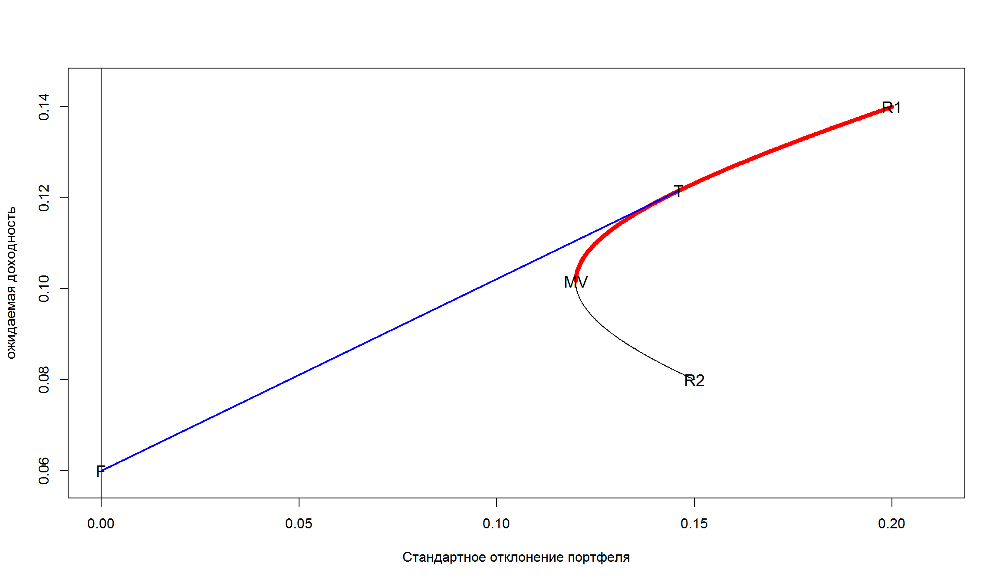
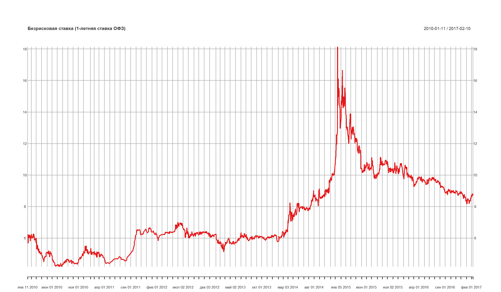
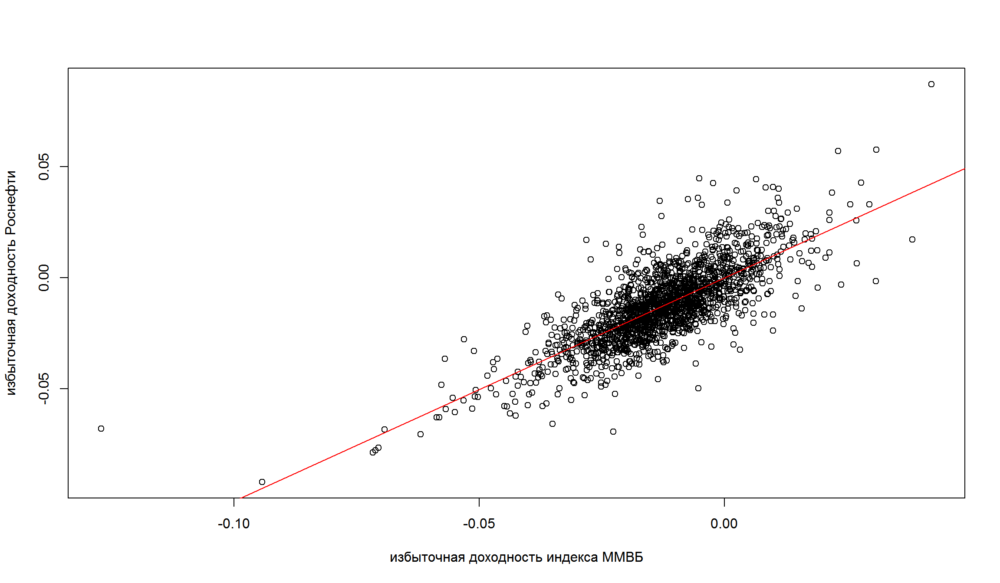

СAPM – Capital Asset Pricing Model
“Количественные финансы”
Салихов Марсель (marcel.salikhov@gmail.com)
2017-02-13
Цели лекции
- понять теоретические основы CAPM
- применение CAPM для оценки эффективности портфельных инвестиций
- применение CAPM для оценки “справедливой” стоимости собственного капитала
- оценку показателей CAPM в R
- проблемы с эмпирическим обоснованием CAPM
- изучить, как устроена 3-факторная модель Фамы и Френча (Fama & French 1992).
CAPM
- Модель CAPM (Capital Asset Pricing Model) – одна из наиболее известных и используемых моделей в финансах.
- CAPM дала теоретические основания для распространения пассивного инвестирования.
- CAPM дает возможность оценивать ожидаемые доходности для различных инвестиций и помогает оценивать “справедливые” значения доходностей для компаний, которые не торгуются публично.
- CAPM используется для установления “справедливых” норм прибыли для оценки отдачи вложенного капитала в регулируемых видах деятельности.
- Модель CAPM широко используется на практике, но есть серьезные проблемы с ее эмпирической поддержкой.
СAPM – возникновение
- В 1990 году Уильям Шарм получил Нобелевскую премию по экономике за работу по CAPM, опубликованную в 1964 году (Sharpe, William F. “Capital asset prices: A theory of market equilibrium under conditions of risk.” The journal of Finance 19.3 (1964): 425-442.)
- Другие авторы, примерно в это же время работавшие над этой темой независимо от Шарпа, получившие аналогичные результаты – Джон Линтнер, Джек Трейнор и Ян Моссин.
- Примечательно то, что статья Шарпа была отвергнута журналом Journal of Finance и была принята к публикации только через два года, когда сменился редактор журнала.
Основополагающая идея CAPM
- Основная революционная идея CAPM заключалась в том, что премия за риск отдельной ценной бумаги не связана с ее “индивидуальным риском”.
Риск-премия бумаги обусловлена вкладом данной ценной бумаги в общий риск эффективно диверсифицированного портфеля.
Это базовая идея CAPM!
- Рыночной портфель – и есть оптимальный портфель по Марковицу (mean-variance).
Допущения
CAPM строится с представления о том, какие бы были премии за риск для акций, если выполняются следующие допущения:
- Цены находятся в равновесии. Для каждой бумаги спрос равен предложению.
- Все участники рынка имеют одинаковые прогнозы для ожидаемых значений доходности и риска. Следовательно, они вкладывают свои средства в рискованные активы таким образом, что в итоге сосредотачивают их в своих портфелях в одних и тех же пропорциях.
- Все участники выбирают оптимальные портфели по Марковицу, исходя принципов эффективной диверсификации. Это означает, что все инвесторы имеют тангенциальный портфель рисковых активов, а также безрисковый актив.
- Рынок дает получить дополнительную доходность за риск, который нельзя избежать, но на рынке нет вознаграждения за риск, который связан с неэффективным выбором портфеля. Риск премии для отдельной бумаги связано с не с риском самой бумаги непосредственно, а ее вкладом в риск эффективного портфеля.
Исходя из допущения №3, следует, что рыночной портфель является апроксимацией тангенциального портфеля.
Рыночный портфель (market portfolio)
- Исходя из приведенных предпосылок и с учетом того, что относительное количество рискованных активов у каждого инвестора оказывается одинаковым, фондовый рынок может находиться в равновесии в случае, если эти оптимальные пропорции соответствуют пропорциям, в которых активы представлены на рынке.
- Портфель, состоящий из всех имеющихся ценных бумаг, пропорции инвестирования в которые соответствуют их доли в общей рыночной капитализации, называется рыночным портфелем.
- Состав рыночного портфеля отражает предложение существующих финансовых активов, оцененных по текущим рыночным ценам.
- На практике за рыночной портфель принимают широко диверсифицированный индекс (S&P 500, к примеру).
- Существуют разные представления о том, что же все таки стоит включать в рыночный портфель – акции компаний иностранных рынков? недвижимость? производные инструменты? По факту мы не можем точно измерить рыночной портфель.
Важно: CAPM соблюдается, если верны допущения
Capital Market Line (CML)
capital market line связывает дополнительную ожидаемую доходность эффективного портфеля и его риск.
Ожидаемая избыточная доходность – это ожидаемая доходность минус безрисковая ставка, она также называется риск-премия.
\[r_P = r_f + \frac{r_M - r_f}{\sigma_M}\sigma_P \]
где \(r_P\) – это доходность данного эффективного портфеля (сочетание рыночного портфеля и безрискового актива),
\(r_f\) – безрисковая ставка;
\(r_M\) – ожидаемая доходность рыночного портфеля
\(\sigma_M\) – стандартное отклонение \(R_M\)
\(r_M - r_f\) – премия за риск рыночного портфеля
\(r_P - r_f\) – премия за риск нашего эффективного портфеля
\(r_f, r_M, \sigma_M\) – константы, что меняется в этом уравнении это – \(r_P, \sigma_P\), то есть соотношение рыночного портфеля и рискового актива в портфеле.

Угол наклона CML
Угол наклона CML равен:
\[ \frac{r_M - r_f}{\sigma_M}\]
Угол наклона можно интерпретировать как отношение премии за риск к стандартному отклонению рыночного портфеля – уже известный нам показатель Шарпа (Sharpe Ratio).
Следствие – все эффективные портфели имеют тот же показатель Шарпа, что и рыночной портфель
Пример CML
Рассмотрим линию рынка капитала (CML), если \(r_f = 0,06; r_M= 0,15; \sigma_M = 0,22\).
- Все эффективные портфели лежат на линии, которая соединяет безрисковый актив (F) и рыночный портфель (M) – это следует из оптимизации по Марковицу.
- Добавление CAPM – рыночный портфель является эффективным. Нам нет необходимости искать веса в оптимальном портфеле, можно просто использовать долю рыночной капитализации компании в общем индексе.
Следствия из СAPM
- Для большинства инвесторов результаты пассивной стратегии (комбинирование безрисковых активов с вложениями в пассивные инвестиционные фонды, реплицирующих широкий индекс) – так же хороши, как если бы вели активный поиск доходных ценных бумаг.
- Премия за риск для каждой отдельной бумаги пропорциональна только ее вкладу в совокупный риск всего рыночного портфеля. Премия за риск не зависит от риска, присущего ей в отдельности.
Security Market Line
- Security market line (SML) связывает избыточную доходность актива с его его углом наклона к рыночному портфелю.
- SML отличается от CML в том смысле, что SML применима для любого актива, в то время как CML применима только к эффективным портфелям.
Это выражение описывает линию доходности рынка ценных бумаг (SML): \[E(r_i) - r_f = \beta_i[E(r_M) - r_f] \]
- SML говорит, что риск-премия актива \(i\) является произведением его беты (\(\beta\)) на риск-премию рыночного портфеля.
- Уравнение SML и есть базовое уравнение модели CAPM.
Бета (\(\beta\))
- Риск эффективного портфеля определяется величиной \(\sigma_M\).
- Общая мера присущего ценной бумаги риска (систематического риска) в рамках CAPM задается коэффициентом “бета”.
- \(\beta\) отражает предельный вклад доходности данной ценной бумаги в дисперсию доходности рыночного портфеля.
\[\beta_i = \frac{\sigma_{iM}}{\sigma_M} \] где \(\sigma_{iM}\) – коварация доходностей между i-ой ценной бумаги и доходностью рыночного портфеля.
Можно выразить дисперсию рыночного портфеля как:
\[\sigma_M^2 = \sum w_i Cov(r_i, r_m) \]
где \(w_i\) – доля i-ого актива в рыночном портфеле.
Интепретация беты
Значения беты дают возможность интепретировать риск актива (портфеля):
\(\beta > 1\) – агрессивный актив (портфель);
\(\beta = 1\) – средний уровень риска;
\(\beta < 1\) – консервативный портфель
В данном случае акция J находится ниже границы SML. СAPM прогнозирует, что цена бумаги J будет снижаться пока она вновь не окажется на линии SML.
Расчет беты в R
Коэффициент бета можно рассчитать с помощью обычной линейной регрессии в R:
# OnDate <- start.date <- as.Date('2010-01-01')
# ToDate <- end.date <- Sys.Date()
# ROSN <- rusquant::getSymbols.Finam('ROSN', from = start.date) # роснефть
# MICEX <- rusquant::getSymbols.Finam('MICEX', from = start.date) # ммвб
#
# ROSN.rtn <- diff(log(ROSN$ROSN.Close))
# MICEX.rtn <- diff(log(MICEX$MICEX.Close))
#
# # получить безрисковкую ставку (1-летние ОФЗ)
# source('https://raw.githubusercontent.com/quantviews/CBR/master/codes_new/CBR_web.R')
# rf_rate <- Isoterm(start.date,end.date,I_Day = 1)
#
# rf_rate_d <- (100+rf_rate)^(1/365)-1
plot(rf_rate, main = 'Безрисковая ставка (1-летняя ставка ОФЗ)')

ex_rosn_rtns <- ROSN.rtn - rf_rate_d
ex_micex_rtns <- MICEX.rtn - rf_rate_d
fit <- lm(ex_rosn_rtns ~ ex_micex_rtns)
summary(fit)
Call:
lm(formula = ex_rosn_rtns ~ ex_micex_rtns)
Residuals:
Min 1Q Median 3Q Max
-0.046727 -0.006698 -0.000729 0.006038 0.060207
Coefficients:
Estimate Std. Error t value Pr(>|t|)
(Intercept) 8.833e-05 3.665e-04 0.241 0.81
ex_micex_rtns 1.009e+00 2.003e-02 50.377 <2e-16 ***
---
Signif. codes: 0 '***' 0.001 '**' 0.01 '*' 0.05 '.' 0.1 ' ' 1
Residual standard error: 0.01115 on 1775 degrees of freedom
(1 observation deleted due to missingness)
Multiple R-squared: 0.5884, Adjusted R-squared: 0.5882
F-statistic: 2538 on 1 and 1775 DF, p-value: < 2.2e-16
Интерпретация:
Значение t-статистики при свободном коэффициенте равно 0,24. Мы не можем отвергнуть гипотезу о том, что значение коэффициента не равно нулю.
Коэффициент при доходности индекса близок к 1. Это означает, что бета акций Роснефти близка к 1.
R^2 = 0,59. Это означает, что 58% дисперсии доходности Роснефти “объясняется” динамикой широкого рынка, 41% – дисперсии объясняется специфическими факторами.
Расчет беты в R – 2
рассмотрим вариант расчет регрессии без свободного члена (intercept term). В R такое уравнение рассчитывается добавлением параметра +0 в формуле.
fit0 <- lm(ex_rosn_rtns ~ ex_micex_rtns + 0)
summary(fit0)
Call:
lm(formula = ex_rosn_rtns ~ ex_micex_rtns + 0)
Residuals:
Min 1Q Median 3Q Max
-0.046714 -0.006652 -0.000700 0.006056 0.059870
Coefficients:
Estimate Std. Error t value Pr(>|t|)
ex_micex_rtns 1.00587 0.01445 69.59 <2e-16 ***
---
Signif. codes: 0 '***' 0.001 '**' 0.01 '*' 0.05 '.' 0.1 ' ' 1
Residual standard error: 0.01115 on 1776 degrees of freedom
(1 observation deleted due to missingness)
Multiple R-squared: 0.7317, Adjusted R-squared: 0.7315
F-statistic: 4843 on 1 and 1776 DF, p-value: < 2.2e-16
plot(coredata(ex_micex_rtns), coredata(ex_rosn_rtns),
xlab = 'избыточная доходность индекса ММВБ', ylab = 'избыточная доходность Роснефти')
abline(lm(ex_rosn_rtns ~ ex_micex_rtns + 0), col="red")

Интепретация альфы
- Разность между ожидаемой доходностью ценной бумаги (или портфеля бумаг) и соответствующей точкой на линии доходности SML называется коэффициентом альфа – \(\alpha\).
- В регрессии СAPM \(\alpha\) равно свободному коэффициенту.
Пример: предположим, что ожидаеая доходность рыночного портфеля равна 14%, бета бумаги = 1,2, а безрисковая ставка равна 6%. Тогда SML указывает нам, что ожидаемя доходность бумаги равна:
\(E(r)= r_f+\beta[E(r_M)-r_f] = 6 + 1,2(14-6) = 15,6%\).
Если мы считаем, что на самом деле ожидаемая доходность бумаги равна 17%, тогда альфа будет равно 1,4%
Альфа как мера оценки эффективности портфельных управляющих
- Альфа может использоваться для оценки и сравнения различных портфельных управляющих, которые формируют и управляют инвестиционными портфелями.
- Если управляющий может работать так, чтобы значение альфа его портфеля было постоянно положительным, то его работа оценивается как отличная.
- Если вы можете найти управляющего, способного обеспечить положительное значение альфа на длинных горизонтах, тогда вы можете “превзойти” рынок.
- К сожалению, исследования показывают, что большинство портфельных управляющих имеют отрицательное значение альфа (за вычетом расходов и комиссий за управление)
Использование CAPM для формирования портфеля ценных бумаг
CAPM говорит, что оптимальный алгоритм для инвестирования заключается в следующем:
- Определите, какой уровень риска является для вас приемлемым (\(0\leq \sigma_P \leq \sigma_M\)) – в принципе, мы можем определить уровень риска больше, чем рыночный, если есть возможность занять деньги, чтобы инвестировать в рисковый актив.
- Вычислите \(w = \frac{\sigma_P}{\sigma_M}\)
- Инвестируйте долю \(w\) вашего капитала в индексный фонд (фонд который реплицирует поведения рынка).
- Инвестируйте долю \(1-w\) вашего капитала в безрисковый актив.
Использование CAPM для оценки стоимости капитала
- CAPM стандартно используется для оценки стоимости собственного капитала и расчета WACC – средневзвешенной стоимости капитала фирмы.
\[WACC = r_{debt}(1-T) \frac{D}{E+D}+r_{equity}\frac{E}{E+D} \] где
\(r_debt\) – рыночная ставка по используемому фирмой долгу, %
\(T\) – ставка по налогу на прибыль, так как процентные платежи вычитаются из налогооблагаемой базы по налогу на прибыль (“налоговый щит”)
\(D\) – величина используемого компанией долга
\(E\) – сумма собственного капитала фирмы (рыночная капитализация – для публичных компаний)
\(r_{equity}\) – рыночная ставка доходности собственного капитала (обычно определяется с помощью модели CAPM или ее модификации)
- Таким образом, модель CAPM используется практически во всех методах оценки (asset valuation) и инвестиционном анализе.
- Фирма не должна принимать инвестиционные проекты, внутренняя норма рентабельности которых (IRR) не превышает стоимость капитала (WACC).
- Модель CAPM используется для оценки справедливого уровня доходности собственного капитала в регулируемых отраслях экономике (к примеру, при расчете величины тарифа).
Проблемы с CAPM
- Теория CAMP очень красива и элегантна, но есть существенные проблемы с ее эмпирической поддержкой. Дальнейшие исследования показали, что связь между бетой и ожидаемой доходностью слишком “плоская”.
- Активы с низкой бетой имеют “чересчур” высокие значения ожидаемой доходности, активы с высокой бетой – чересчур низкое.
Источник: The Capital Asset Pricing Model: Theory and Evidence (Eugene F. Fama and Kenneth R. French)
Настоящие портфели имеют плоское соотношение между бетой и ожидаемой доходностью.
Трехфакторня модель Фамы и Френча
- В ответ на эмпирические проблемы CAPM, Eugene Fama и Kenneth French предложили с 1992 году ее модификацию - так называемую трех-факторную модель Fama-French model.
3-факторая модель включает изначальные факторы модели CAPM и добавляет к ним еще два:
- (small-minus-big, SMB) – фактор размера, превышение доходности портфеля из активов фирм с малой капитализацией над портфелем из активов фирм с большой капитализацией.
- (high-minus-low, or HML) – фактор стоимости (value), превышение доходности портфеля из активов фирм с низким соотношением балансовой и рыночной стоимости над портфелем из активов фирм с высоким соотношением балансовой и рыночной стоимости.
Модель Фамы и Френча можно представить в следующем виде: \[r = \alpha + r_f+ \beta(r_m-r_f) + \gamma SMB + \phi HML \]
Таблица с коэффициентам из работы Fama & French (1992), которая охватывала период с 1963 по 1990 год (месячные значения)
Текущие значения параметров модели Fama & French
Список использованных источников
- “Statistics and Data Analysis for Financial Engineering” (David Ruppert & David Matteson)
- Analyzing Financial Data and Implementing Financial Models Using R (Clifford Ang).
- Sharpe, William F. “Capital asset prices: A theory of market equilibrium under conditions of risk.” The journal of finance 19.3 (1964): 425-442.
- Fama, Eugene F., and Kenneth R. French. “The cross‐section of expected stock returns.” the Journal of Finance 47.2 (1992): 427-465.
- Fama, Eugene F., and Kenneth R. French. “The capital asset pricing model: Theory and evidence.” The Journal of Economic Perspectives 18.3 (2004): 25-46.